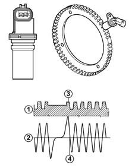

1060GA Check on efficiency of rpm sensor
- Path
- Test > 10 ENGINE > 1060 DIESEL FUEL INJECTION > 1060G pressure pump electric control > 1060GA Check on efficiency of rpm sensor
- Kind
- test / check procedure
- Applies to
- engines: 1.3 JTD; all production periods
- Interactive page
- https://sloeber94.github.io/elrnDB-lYpsln/en/#/2429791
Applies to: engines: 1.3 JTD; all production periods
Check that the gap between the rpm sensor and the flywheel is between 0.5 and 1.5 mm
Check that the rpm sensor resistance is 790 Ohm ± 20%
Check that the sensor output signal corresponds to the enclosed graph.

1. Toothed wheel profile. 2. Engine rpm sensor signal 3. Reference tooth 4 TDC recognition point